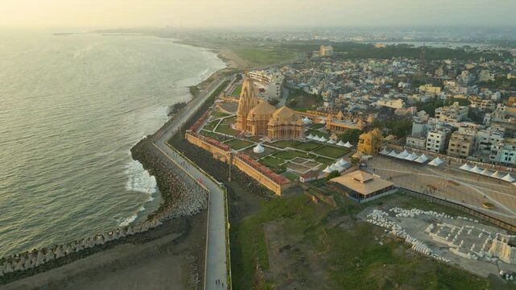
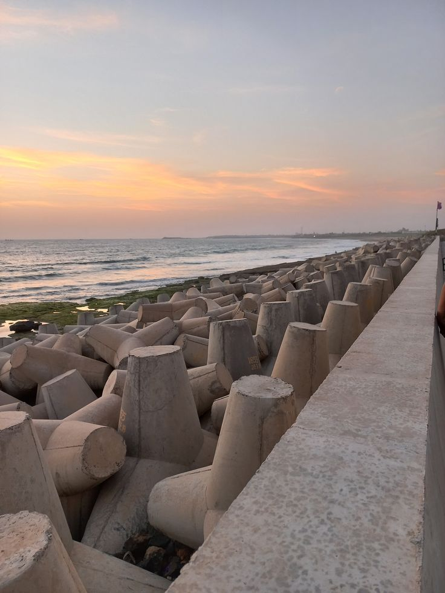
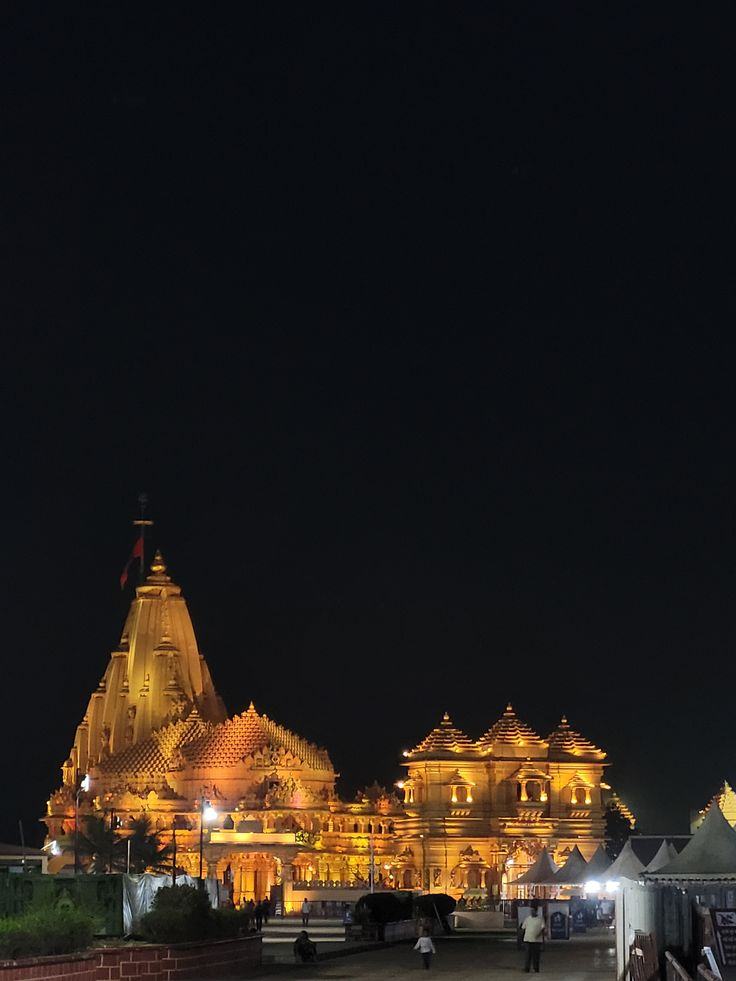
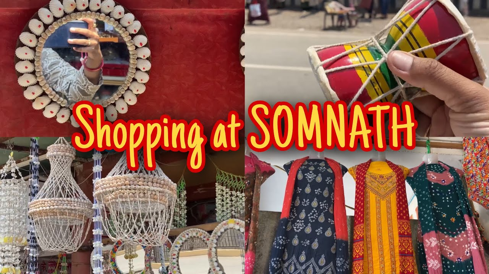
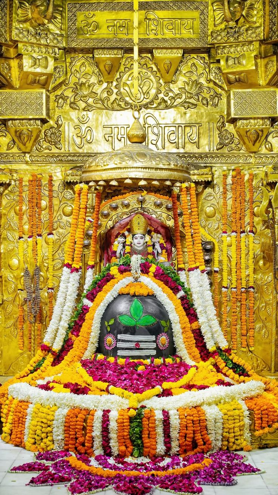
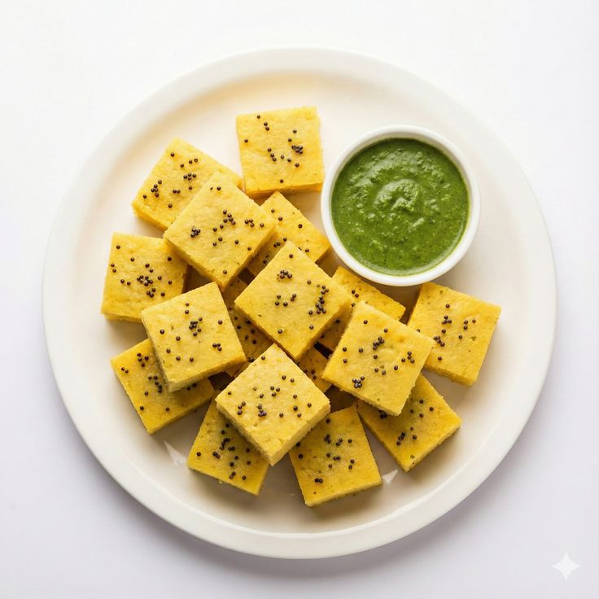

Somnath Over_all View
Somnath is a sacred coastal town in Gujarat, famous for its ancient Jyotirlinga temple and spiritual atmosphere. Located along the Arabian Sea, it beautifully combines religious heritage with natural beauty, making it one of the most visited pilgrimage destinations in India.
Peaceful Nature Spot (Somnath Beach)
Somnath Beach is a serene spot where visitors can enjoy the sound of waves and the view of the temple against the horizon. It is perfect for peaceful walks, relaxation, and experiencing the coastal charm of Gujarat.


Historical Place (Somnath Temple)
The Somnath Temple is one of the twelve Jyotirlingas of Lord Shiva and holds immense religious significance. Destroyed and rebuilt several times in history, it stands today as a symbol of faith and resilience, attracting millions of devotees every year.
Local Market (Somnath Temple Market)
Somnath Temple Market is bustling with shops selling souvenirs, religious items, handicrafts, and local snacks. It is a lively place where pilgrims and tourists can shop and experience the local culture.


Famous Festival (Mahashivratri)
Mahashivratri is the most celebrated festival in Somnath, when thousands of devotees gather to worship Lord Shiva. The temple is beautifully decorated, and the atmosphere is filled with devotion, chants, and cultural programs.
Famous Local Food Items (Snacks → Dhokla)
Dhokla is a popular Gujarati snack enjoyed in Somnath. Soft, spongy, and slightly tangy, it is served with chutneys and reflects the simple yet flavorful essence of Gujarati cuisine.
